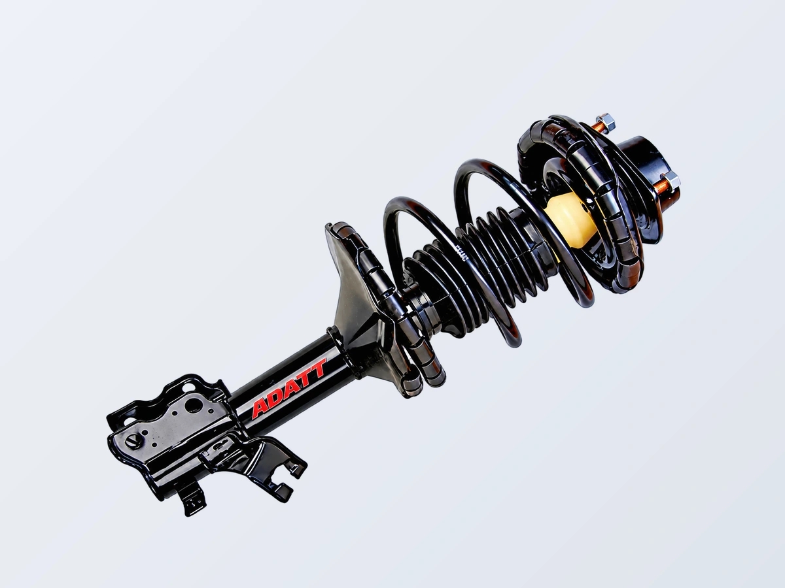
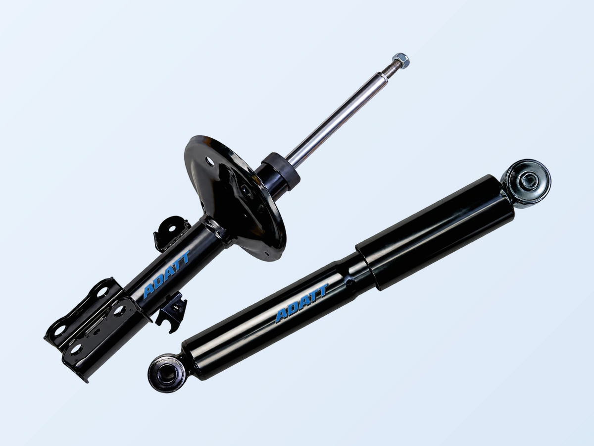
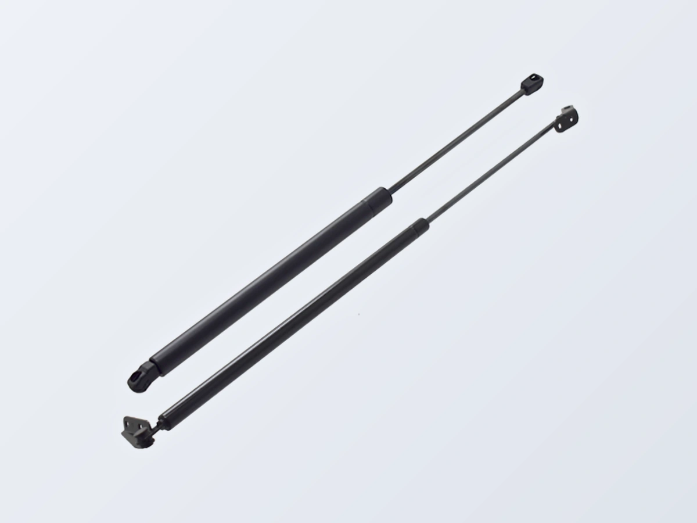
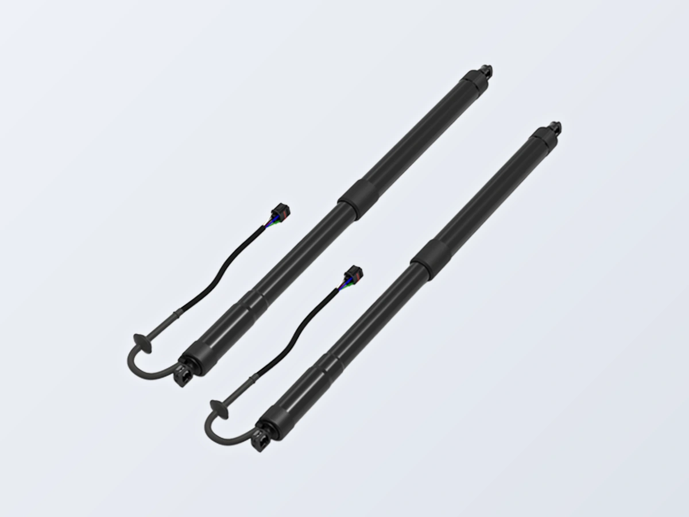
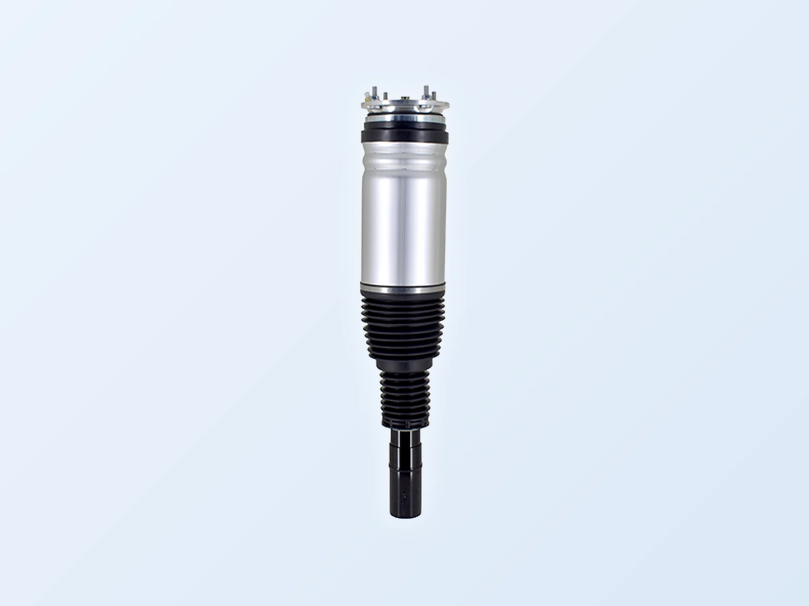
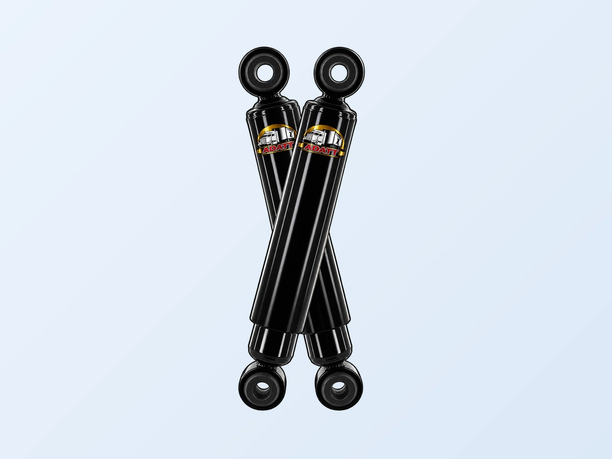
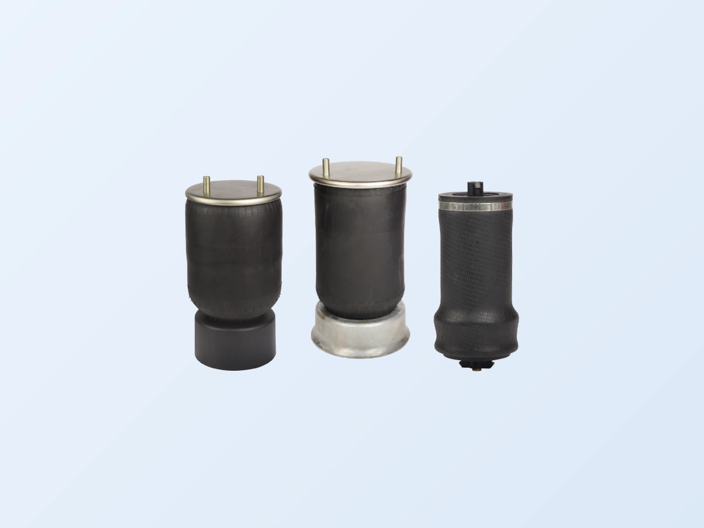

Complete Strut Assemblies
The complete assembly unit is easier and faster to install than traditional struts.

See our catalog below. We have an extensive selection of rugged, professional products. Contact us with any questions.


The complete assembly unit is easier and faster to install than traditional struts.

Improve steering, handling, braking ability and overall safety.

OE-fit design for dependable fit and performance.

Convenience, safety and functionality for modern vehicles.

Restore ride quality, stability, load carrying and comfort.

Class 3–8 commercial vehicle shock absorbers engineered to OE standards.

Heavy duty air springs backed by decades of manufacturing experience.
Find durable, customizable shocks and struts for your off-road vehicle.
Browse Catalog